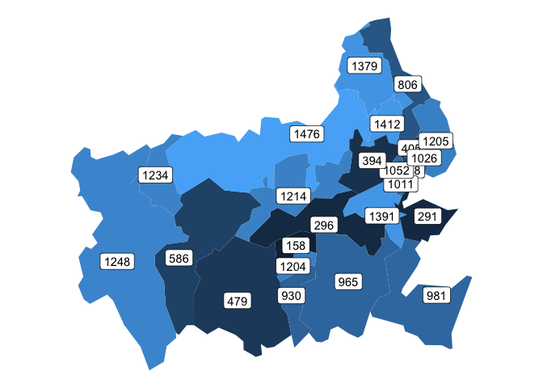

Overview
wardboundaries is an R data package for mapping UK ward boundaries.
The main objects in the package are sf tibbles of ward boundaries, obtained from the ONS Open Geography Portal.
- All the original variables and observations are retained and a
geometrycolumn of type MULTIPOLYGON has been added - LAD codes and names have been added to datasets where required, as I believe they will prove useful in most use cases
The data is ready to be joined to measurements and plotted with e.g. ggplot2 or leaflet.
Use and examples
Access
Accessing a dataset can be done two ways.
By namespace, without loading the whole library
wardboundaries::wards_dec2022
#> Simple feature collection with 8483 features and 12 fields
#> Geometry type: MULTIPOLYGON
#> Dimension: XY
#> Bounding box: xmin: -8.649996 ymin: 49.88234 xmax: 1.763571 ymax: 60.86087
#> Geodetic CRS: WGS 84
#> # A tibble: 8,483 × 13
#> WD22CD WD22NM WD22NMW LAD22CD LAD22NM BNG_E BNG_N LONG LAT OBJECTID
#> <chr> <chr> <chr> <chr> <chr> <int> <int> <dbl> <dbl> <int>
#> 1 E05000650 Astley … " " E08000… Bolton 370670 412906 -2.44 53.6 1
#> 2 E05000651 Bradshaw " " E08000… Bolton 374590 413058 -2.39 53.6 2
#> 3 E05000652 Breight… " " E08000… Bolton 374437 409641 -2.39 53.6 3
#> 4 E05000653 Bromley… " " E08000… Bolton 372113 414150 -2.42 53.6 4
#> 5 E05000654 Crompton " " E08000… Bolton 371741 410493 -2.43 53.6 5
#> 6 E05000655 Farnwor… " " E08000… Bolton 373564 406162 -2.40 53.6 6
#> 7 E05000656 Great L… " " E08000… Bolton 371959 408204 -2.42 53.6 7
#> 8 E05000657 Halliwe… " " E08000… Bolton 370828 409676 -2.44 53.6 8
#> 9 E05000658 Harper … " " E08000… Bolton 371512 406080 -2.43 53.6 9
#> 10 E05000659 Heaton … " " E08000… Bolton 367961 409240 -2.49 53.6 10
#> # ℹ 8,473 more rows
#> # ℹ 3 more variables: Shape__Area <dbl>, Shape__Length <dbl>,
#> # geometry <MULTIPOLYGON [°]>Or by loading the whole library
library(wardboundaries)
wards_dec2022
#> Simple feature collection with 8483 features and 12 fields
#> Geometry type: MULTIPOLYGON
#> Dimension: XY
#> Bounding box: xmin: -8.649996 ymin: 49.88234 xmax: 1.763571 ymax: 60.86087
#> Geodetic CRS: WGS 84
#> # A tibble: 8,483 × 13
#> WD22CD WD22NM WD22NMW LAD22CD LAD22NM BNG_E BNG_N LONG LAT OBJECTID
#> <chr> <chr> <chr> <chr> <chr> <int> <int> <dbl> <dbl> <int>
#> 1 E05000650 Astley … " " E08000… Bolton 370670 412906 -2.44 53.6 1
#> 2 E05000651 Bradshaw " " E08000… Bolton 374590 413058 -2.39 53.6 2
#> 3 E05000652 Breight… " " E08000… Bolton 374437 409641 -2.39 53.6 3
#> 4 E05000653 Bromley… " " E08000… Bolton 372113 414150 -2.42 53.6 4
#> 5 E05000654 Crompton " " E08000… Bolton 371741 410493 -2.43 53.6 5
#> 6 E05000655 Farnwor… " " E08000… Bolton 373564 406162 -2.40 53.6 6
#> 7 E05000656 Great L… " " E08000… Bolton 371959 408204 -2.42 53.6 7
#> 8 E05000657 Halliwe… " " E08000… Bolton 370828 409676 -2.44 53.6 8
#> 9 E05000658 Harper … " " E08000… Bolton 371512 406080 -2.43 53.6 9
#> 10 E05000659 Heaton … " " E08000… Bolton 367961 409240 -2.49 53.6 10
#> # ℹ 8,473 more rows
#> # ℹ 3 more variables: Shape__Area <dbl>, Shape__Length <dbl>,
#> # geometry <MULTIPOLYGON [°]>Map with ggplot2
Perhaps you have some sort of demographic data for each ward. Plotting this as a choropleth with ggplot2 is nice and straightforward
# Make some random numbers that represent a demographic dataset
demo_data <- tibble::tibble(
WD22CD = dplyr::pull(wardboundaries::wards_dec2022, WD22CD),
number_of_ducks = sample(
150:1500, nrow(wardboundaries::wards_dec2022), replace = TRUE
)
)
demo_data
#> # A tibble: 8,483 × 2
#> WD22CD number_of_ducks
#> <chr> <int>
#> 1 E05000650 1490
#> 2 E05000651 1194
#> 3 E05000652 1424
#> 4 E05000653 495
#> 5 E05000654 1478
#> 6 E05000655 1414
#> 7 E05000656 193
#> 8 E05000657 845
#> 9 E05000658 381
#> 10 E05000659 391
#> # ℹ 8,473 more rows
# Join the datasets together
ducks_per_ward <- dplyr::left_join(
wardboundaries::wards_dec2022,
demo_data,
by = dplyr::join_by(WD22CD)
)
# Plot
ducks_per_ward |>
ggplot2::ggplot() +
ggplot2::geom_sf(ggplot2::aes(fill = number_of_ducks), colour = NA) +
ggplot2::theme_void()The following plot isn’t exactly pretty, but it shows how easy it is to focus in on a particular local authority and add labels
# Plot
ducks_per_ward |>
dplyr::filter(LAD22NM == "Vale of White Horse") |>
ggplot2::ggplot() +
ggplot2::geom_sf(
ggplot2::aes(fill = number_of_ducks),
colour = NA,
show.legend = FALSE
) +
ggplot2::geom_sf_label(ggplot2::aes(label = number_of_ducks)) +
ggplot2::theme_void()
Map with leaflet
The following example is mainly cribbed from Leaflet for R. With a couple of format helpers and not much code, it’s possible to create an interactive version of the map
# Format helpers
pal <- leaflet::colorNumeric("Greens", domain = ducks_per_ward$number_of_ducks)
thousands <- scales::label_comma()
labels <- sprintf(
"<strong>%s</strong><br/>%s",
ducks_per_ward$WD22NM, thousands(ducks_per_ward$number_of_ducks)
) |> lapply(htmltools::HTML)
# Leaflet map
leaflet::leaflet() |>
leaflet::addTiles() |>
leaflet::addPolygons(
data = ducks_per_ward,
fillColor = ~pal(number_of_ducks),
weight = 0.1,
opacity = 0.9,
color = "white",
dashArray = "3",
fillOpacity = 0.9,
highlightOptions = leaflet::highlightOptions(
weight = 1,
color = "yellow",
dashArray = "",
fillOpacity = 0.9,
bringToFront = TRUE),
label = labels,
labelOptions = leaflet::labelOptions(
style = list("font-weight" = "normal", padding = "3px 8px"),
textsize = "15px",
direction = "auto")
) |>
leaflet::addLegend(
pal = pal,
values = ducks_per_ward$number_of_ducks,
opacity = 0.9,
title = NULL,
position = "topleft"
)
Further resources
geographr
If your needs are suited to my example maps above then wardboundaries works just fine.
If you have more complex requirements then I recommend checking out geographr. They go far beyond the simple local authority / ward scenario and have boundaries for larger hierarchies, lookup tables, NHS point data, etc. Each dataset in geographr is slimmed down to the essential variables, so you may have to stitch different datasets together. Another important note is that the polygons are highly simplified, whereas wardboundaries offers up to 20m resolution.
Trafford lab API post
A couple of weeks before making this package I knew next to nothing about geospatial data or how to get hold of it. I still don’t, but Trafford Council’s Data lab wrote a very helpful Medium post that explains how to work with the ONS Open Geography Portal’s API to get data in practice. If you have a niche interest this resource will help you understand how to create a specific query for your needs and read the data straight into R with sf.
R map books
- Spatial Data Science (with applications in R) “introduces and explains the concepts underlying spatial data: points, lines, polygons, rasters, coverages, geometry attributes, data cubes, reference systems, as well as higher-level concepts including how attributes relate to geometries and how this affects analysis”
- Geocomputation with R “is for people who want to analyze, visualize and model geographic data with open source software”
Credits
Developed by Jim Gardner.
Hex image cropped from Invocation 6 by Helvetica Blanc.
Largely modelled on and inspired by geographr.
See LICENCE